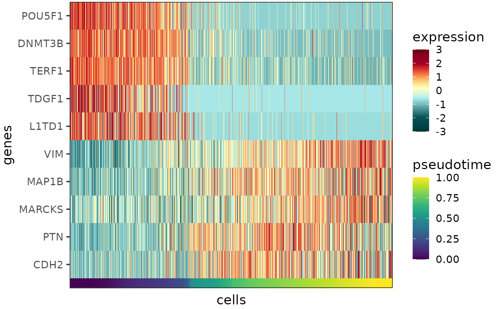

Plots the expression profiles of one or more genes as a heatmap, with the cells ordered by pseudotime or cell type.
Usage
plotExprHeatmap(
genes,
sce,
order_by = "pseudotime",
heatmap_colors = NULL,
annotation_colors = NULL,
z_transform = TRUE,
clip = ifelse(z_transform, 3, Inf),
font_size = 14
)Arguments
- genes
Character vector, the names of the genes for which the expression profiles should be plotted.
- sce
SingleCellExperimentobject containing the expression data (logcounts and metadata) for all network genes. Required metadata column:- {{order_by}}
Numeric or character, the column by which the cells should be ordered on the plot. Typically contains the inferred pseudotime, or the cell type labels.
- order_by
Character specifying the column in the metadata of
sceby which the cells should be ordered on the plot. This column typically contains the inferred pseudotime (default: "pseudotime"), or the cell type labels.- heatmap_colors
Character vector, the heatmap colors for the expression levels. The vector can contain any number of colors that will be passed on to and converted into a continuous scale by
scale_color_gradientn.- annotation_colors
Character vector, the colors for the variable specified by
order_by. If the variable is discrete, the vector should contain as many colors as there are unique values of the variable, if the variable is continuous, the vector can contain any number of colors that will be passed on to and converted into a continuous scale byscale_color_gradientn- z_transform
Logical specifying whether z-transformation should be performed per gene before plotting (default: TRUE).
- clip
Numeric specifying the degree of clipping. For each gene, the expression level values that are more standard deviations away from the mean than
clipare treated as NA. Ifz_transformis set to TRUE, the default is 3 meaning that expression levels are clipped to the range of mean \(\pm\) 3\(\sigma\) per gene, otherwise the default is Inf.- font_size
Numeric, font size (default: 14).
Value
A heatmap as a ggplot object showing the expression profiles of the input genes across all cells.
Details
The function creates a heatmap, with columns corresponding to cells, rows corresponding to genes and colors corresponding to scaled and centered expression levels.
The expression data are taken from the logcounts assay of the input sce object. The colors to represent the expression levels can be controlled by the parameter heatmap_colors.
The cells can be order by pseudotime, cell type or any other variable that makes sense in the given context. The name of metadata column in the input sce object containing the desired cell property can be specified by the parameter order_by (default: "pseudotime"). This cell property is visualized as a rug plot under the heatmap, the colors for the rug can be controlled by the parameter annotation_colors.
Expression levels are clipped to the range of mean \(\pm\) 3\(\sigma\) per gene, this can be changed via the parameter clip. Clipping aids visualization by preventing the outlier data points from squishing the rest of the data into a small color range. If clipping is not desired, please set clip to Inf.
See also
Other functions to plot gene expression profiles:
plotExprAlongPseudotime(),
plotExprViolin(),
plotSumExprHeatmap(),
plotSumExprLine()
Examples
plotExprHeatmap(c("POU5F1","DNMT3B","TERF1","TDGF1","L1TD1","VIM","MAP1B","MARCKS","PTN","CDH2"),
sce)
